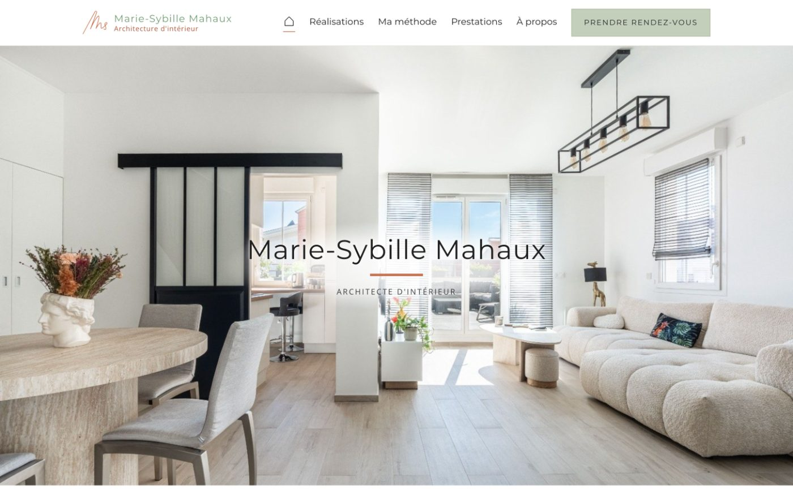
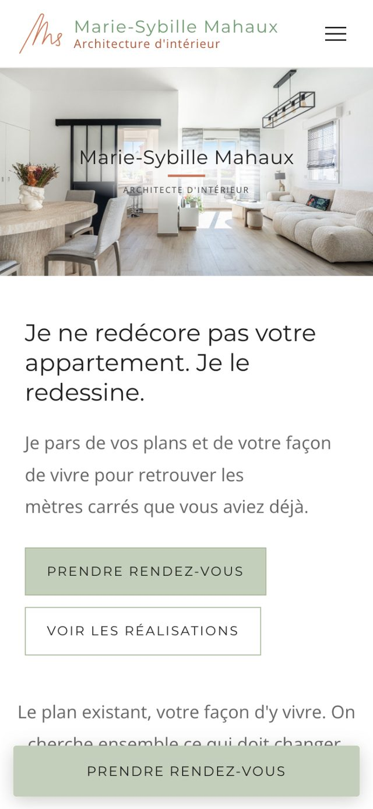

Accueil › Réalisations › Marie-Sybille Mahaux
Site · Architecte d'intérieur
Un site à l’image
de son travail.
Refonte complète du site de Marie-Sybille Mahaux, architecte d'intérieur dans les Hauts-de-Seine et à Paris.


Le défi
Un métier où tout passe par l'image, et un site qui ne montrait pas la qualité des projets. Il fallait aussi garder ce qui fait son identité, à commencer par sa couleur.
Ce qui a été fait
Une refonte complète : mise en valeur des projets en grand format, parcours qui mène à la prise de rendez-vous, et un outil simple pour qu'elle modifie textes et photos elle-même.
Le résultat
Un site qui lui ressemble, et qu'elle fait vivre seule. Ajouter son témoignage et, si possible, un chiffre (demandes de rendez-vous).